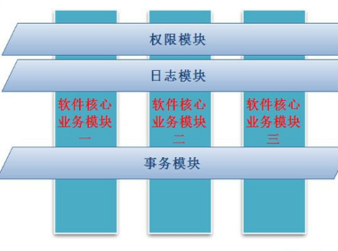

原文连接:https://www.cnblogs.com/hsiang/p/11710138.html
概述
在软件开发中，我们重点关注的是业务逻辑代码，但在实际开发中，需要写的代码却不仅仅是业务逻辑，还需要处理记录日志，异常处理，事务控制等一些与业务无关的事情。而且这些代码也是服务端必须的，类似这样的代码分散在系统中的各个地方，如：几乎所有的重要操作方法前面都会加上日志记录代码，这样的代码写起来繁琐，又占用开发时间和精力，而且不容易维护。我们统一把这类代码成为【切面代码】，如何让我们从这些繁琐的工作中抽身而退，更加专注于业务逻辑，这就需要用到Spring的AOP技术。
AOP原理：将复杂的需求分解成不同的方面，将散落在系统中的公共功能集中解决，如下图所示：

通知(Advice)的分类
分类如下：
- 前置通知：在某个切入点之前执行的通知
- 后置通知：在某个切入点之后执行的通知
- 异常通知：在某个切入点出现异常时候的通知
- 环绕通知：包围某个切入点的通知，功能最强大
准备工作
AOP需要的jar包
除Spring必备的五个jar包外，还需要以下三个来支撑AOP：
- aopalliance-1.0.jar
- aspectjweaver-1.5.3.jar
- spring-aop-4.0.6.RELEASE.jar
定义一个接口和实现类
如下所示：
IStudentService接口 代码如下：


1 package com.hex.second;
2
3 /**
4 * 学生服务接口
5 * @author Administrator
6 *
7 */
8 public interface IStudentService {
9
10 /**
11 * 新增学生
12 * @param student
13 */
14 void addStudent(Student student);
15 /**
16 * 删除学生
17 * @param id
18 */
19 void deleteStudent(int id);
20
21 /**
22 * 修改学生
23 * @param id
24 */
25 void updateStudent(int id);
26 }StudentServiceImpl类 代码如下：
1 package com.hex.second;
2
3 /**
4 * 学生服务事项类
5 * @author Administrator
6 *
7 */
8 public class StudentServiceImpl implements IStudentService {
9
10 /**
11 * 新增学生
12 */
13 public void addStudent(Student student) {
14 // TODO Auto-generated method stub
15 System.out.println("新增加学生。。。");
16 }
17
18 /**
19 * 删除学生
20 */
21 @Override
22 public void deleteStudent(int id) {
23 // TODO Auto-generated method stub
24 System.out.println("删除学生。。。");
25 }
26
27 /**
28 * 修改学生
29 */
30 public void updateStudent(int id) {
31 // TODO Auto-generated method stub
32 System.out.println("修改学生");
33 int i=1/0;
34 }
35 }前置通知
1. 实现接口
前置通知类，需要实现【MethodBeforeAdvice】接口中的before方法，如下所示：
Method method 表示执行的目标方法
Object[] args 表示传入的参数数组
Object target 表示目标对象，即切入点所示的对象
1 package com.hex.second;
2
3 import java.lang.reflect.Method;
4
5 import org.springframework.aop.MethodBeforeAdvice;
6
7 public class LogBefore implements MethodBeforeAdvice {
8
9 /***
10 * 前置通知
11 * method:表示调用的方法，即切入点
12 * args:表示调用方法的参数
13 * target：表示方法所在的目标对象
14 */
15 @Override
16 public void before(Method method, Object[] args, Object target) throws Throwable {
17 // TODO Auto-generated method stub
18 System.out.println("前置通知。。。");
19 System.out.println("method="+method+",args数量="+args.length+",target="+target);
20 }
21 }2. 配置applicationContext.xml文件
如果要支持AOP，需要引入命名空间，如下所示：
1 <?xml version="1.0" encoding="UTF-8"?>
2 <beans xmlns="http://www.springframework.org/schema/beans"
3 xmlns:xsi="http://www.w3.org/2001/XMLSchema-instance"
4 xmlns:p="http://www.springframework.org/schema/p"
5 xmlns:aop="http://www.springframework.org/schema/aop"
6 xsi:schemaLocation="http://www.springframework.org/schema/beans
7 http://www.springframework.org/schema/beans/spring-beans.xsd
8 http://www.springframework.org/schema/aop
9 http://www.springframework.org/schema/aop/spring-aop.xsd">3. 配置两个类对应的bean
1 <!-- 服务类 -->
2 <bean id="studentService" class="com.hex.second.StudentServiceImpl"></bean>
3 <!-- 前置通知类 -->
4 <bean id="logBefore" class="com.hex.second.LogBefore"></bean>4. 配置AOP
通过AOP配置，将通知类和业务逻辑类进行关联，说明如下：
一个配置文件中，可以有多个<aop:config>配置，每一个aop:config中只能有一个aop:pointcut配置，如果有多个切入点需要配置expression，且切入点必须是全路径配置。如下所示：
<!-- 将addStudent和通知进行关联 -->
<aop:config>
<!-- 每一个config只有一个poingcut，如果有多个，则需要配置多个config -->
<!-- 配置切入点 id自定义，expression表示切入点的函数名-->
<aop:pointcut expression="execution(public void com.hex.second.StudentServiceImpl.addStudent(com.hex.second.Student))" id="pc"/>
<!-- 配置通知 -->
<aop:advisor advice-ref="logBefore" pointcut-ref="pc"/>
</aop:config>后置通知
1. 实现接口
需要实现【AfterReturningAdvice】接口【afterReturning】方法中的 如下所示：
1 package com.hex.second;
2
3 import java.lang.reflect.Method;
4
5 import org.springframework.aop.AfterReturningAdvice;
6
7 /**
8 * 通过实现接口将普通类变成后置通知
9 * @author Administrator
10 *
11 */
12 public class LogAfter implements AfterReturningAdvice {
13
14 /**
15 * 后置通知实现类
16 * returnValue：返回值
17 * method:表示调用的方法，即切入点
18 * args:表示调用方法的参数
19 * target：表示方法所在的目标对象
20 */
21 @Override
22 public void afterReturning(Object returnValue, Method method, Object[] args, Object target) throws Throwable {
23 // TODO Auto-generated method stub
24 System.out.println("后置通知。。。");
25 System.out.println("returnValue="+returnValue+",method="+method+",args数量="+args.length+",target="+target);
26 }
27
28 }2. 配置切入点和通知的Bean
1 <bean id="studentService" class="com.hex.second.StudentServiceImpl"></bean>
2 <bean id="logAfter" class="com.hex.second.LogAfter"></bean>3. AOP配置
如果前置通知和后置通知为同一个切入点，则可以配置在一个aop:config节点中，如下所示：
多个切入点用or连接，多个通知就配置多个aop:advisor
1 <!-- 将addStudent和通知进行关联 -->
2 <aop:config>
3 <!-- 每一个config只有一个poingcut，如果有多个，则需要配置多个config -->
4 <!-- 配置切入点 id自定义，expression表示切入点的函数名-->
5 <aop:pointcut expression="execution(public void com.hex.second.StudentServiceImpl.deleteStudent(int)) or execution(public void com.hex.second.StudentServiceImpl.addStudent(com.hex.second.Student))" id="pc"/>
6 <!-- 配置通知 -->
7 <aop:advisor advice-ref="logBefore" pointcut-ref="pc"/>
8
9 <aop:advisor advice-ref="logAfter" pointcut-ref="pc"/>
10 </aop:config>异常通知
1. 实现接口
异常通知是有异常发生时，才会触发的通知，需要实现【ThrowsAdvice】接口，且此接口没有需要实现的方法，但同时给出了约定：
必须以固定格式实现方法：public void afterThrowing([Method, args, target], ThrowableSubclass);
1 package com.hex.second;
2
3 import java.lang.reflect.Method;
4
5 import org.springframework.aop.ThrowsAdvice;
6
7 /**
8 * 异常通知
9 * @author Administrator
10 *
11 */
12 public class LogException implements ThrowsAdvice {
13
14 /**
15 * 异常通知执行
16 * @param method 切入点
17 * @param args 参数个数
18 * @param target 调用目标对象
19 * @param ex 异常
20 */
21 public void afterThrowing(Method method, Object[] args, Object target, Exception ex){
22 System.out.println("异常通知。。。");
23 System.out.println("method="+method+",args数量="+args.length+",target="+target+",ex="+ex);
24 }
25 }2. 配置Bean类
1 <!-- 服务类 -->
2 <bean id="studentService" class="com.hex.second.StudentServiceImpl"></bean>
3 <bean id="logException" class="com.hex.second.LogException"></bean>3. 配置AOP
如下所示：参数只需要写参数类型即可，不需要写参数名称
1 <!-- 可以配置aop:config -->
2 <aop:config>
3 <aop:pointcut expression="execution(public void com.hex.second.StudentServiceImpl.updateStudent(int))" id="pc1"/>
4 <!-- 配置通知 -->
5 <aop:advisor advice-ref="logException" pointcut-ref="pc1"/>
6 </aop:config>环绕通知
1. 实现接口
环绕通知，需要实现【MethodInterceptor】接口并实现【invoke】方法，其中obj = invocation.proceed();表示调用目标方法，如果不写此句，则目标方法不会被调用。如下所示：
1 package com.hex.second;
2
3 import org.aopalliance.intercept.MethodInterceptor;
4 import org.aopalliance.intercept.MethodInvocation;
5
6 /**
7 * 环绕通知
8 * 环绕通知的本质上是一个拦截器
9 * @author Administrator
10 *
11 */
12 public class LogAround implements MethodInterceptor {
13
14 /**
15 *
16 */
17 @Override
18 public Object invoke(MethodInvocation invocation) throws Throwable {
19 Object obj = null;
20 try {
21
22 // 前置通知
23 System.out.println("环绕实现前置通知。。。");
24 System.out.println("环绕通知：target="+invocation.getThis()+",method="+invocation.getMethod().getName()+",args="+invocation.getArguments().length);
25 // 控制目标方法的执行 obj表示目标方法的返回值，表示执行addStudent(student)方法
26 //此方法控制目标方法的执行，如果不写此方法，则目标方法不会执行，此方法前的是前置通知，此方法后的是后置通知
27 obj = invocation.proceed();
28 // 后置通知
29 System.out.println("环绕实现后置通知。。。");
30 } catch (Exception e) {
31 // 异常通知
32 System.out.println("环绕实现异常通知。。。");
33 throw e;
34 }
35 // TODO Auto-generated method stub
36 return obj;
37 }
38
39 }2. 配置Bean
1 <!-- 服务类 -->
2 <bean id="studentService" class="com.hex.second.StudentServiceImpl"></bean>
3 <bean id="logAround" class="com.hex.second.LogAround"</bean>3. 配置AOP
所有配置切入点通知的方式都是一样的。如下所示：
1 <aop:config>
2 <aop:pointcut expression="execution(public void com.hex.second.StudentServiceImpl.addStudent(com.hex.second.Student))" id="pc2"/>
3 <aop:advisor advice-ref="logAround" pointcut-ref="pc2"/>
4 </aop:config>所有的调用方式是一致的，不需要调用通知类，系统会自动调用，如下所示：
1 package com.hex.second;
2
3 import org.springframework.context.ApplicationContext;
4 import org.springframework.context.support.ClassPathXmlApplicationContext;
5
6 public class TestMain {
7
8 public static void main(String[] args) {
9 // TODO Auto-generated method stub
10 //通过Spring进行注入，Spring上下文对象
11 ApplicationContext context=new ClassPathXmlApplicationContext("applicationContext.xml");
12 IStudentService studentService=(IStudentService)context.getBean("studentService");
13 Student student =new Student();
14 studentService.addStudent(student);
15 //studentService.deleteStudent(1);
16 //studentService.updateStudent(0);
17 }
18
19 }
备注
合抱之木，生于毫末;九层之台，起于累土;千里之行，始于足下。